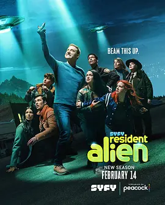

7.8
外星居民 第三季
Resident Alien Season 3
2024
美国
评分 7.8
导演:
Kabir Akhtar / Lea Thompson / Robert Duncan McNeill
演员:
艾伦·图代克 / 萨拉·汤科 / 科瑞·雷诺兹 / 爱丽丝·韦特兰德 / 莱维·费赫尔
类型:
剧情,喜剧,科幻
剧情简介
灰人入侵的威胁比以往任何时候都更清晰，地球的危机步步逼近。哈里原本只想安静度日，但迫在眉睫的星际冲突逼得他不得不与麦卡利斯特将军握手言和。这对从未真正互信过的组合，在一间充满闪烁屏幕与监听噪声的秘密基地里，第一次坐在同一张作战桌前。哈里的外星逻辑与将军的军事实用主义频频碰撞，让合作过程既混乱又出奇高效。与此同时，小镇的生活因异常现象而暗潮涌动：夜空出现短暂闪光、牲畜离奇失踪、无线电频段不断被干扰。当地居民依旧忙着鸡毛蒜皮的日常，却隐约察觉到某种隐形力量正靠近。阿斯塔持续担心哈里的危险处境，却也知道他比任何人都更清楚这场战争意味着什么。哈里在寻找灰人踪迹的同时，也被迫面对一个更难的问题——他逐渐理解、甚至珍惜起人类世界。那些看似普通的小事：朋友的善意、争吵后的和解、在酒吧里分享一杯温热的饮品，都成了让他分心、让他动摇的情感来源。随着侵略日益逼近，他不得不思考自己究竟属于哪里，又能为谁而战。本季延续了系列的幽默与荒诞感，但同时让压迫的气息不断累积。哈里与麦卡利斯特从互相猜忌到并肩作战，小镇居民在无知与勇气之间徘徊，而来自宇宙深处的威胁正悄悄落下影子。越靠近真相，人类与外星人的界线越模糊，责任与情感的重量也变得前所未有地沉重。